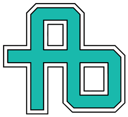

Current mark
Recognizable original geometry, preserved as the identity anchor.
No new symbol, metaphor, lettering or decorative element.

Recognizable original geometry, preserved as the identity anchor.
Aligned grid, consistent outline rhythm, tighter canvas and dark-surface colorway.